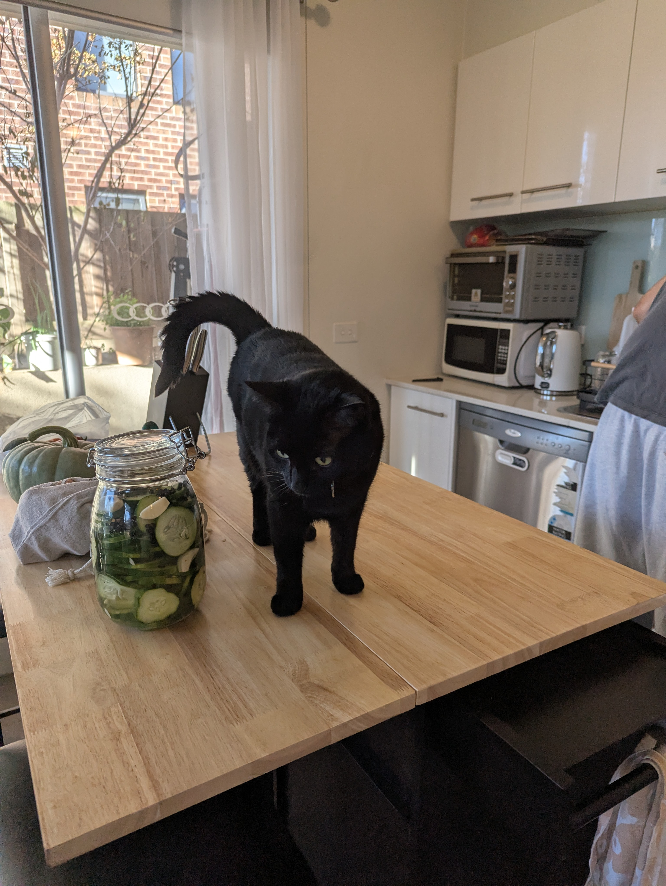
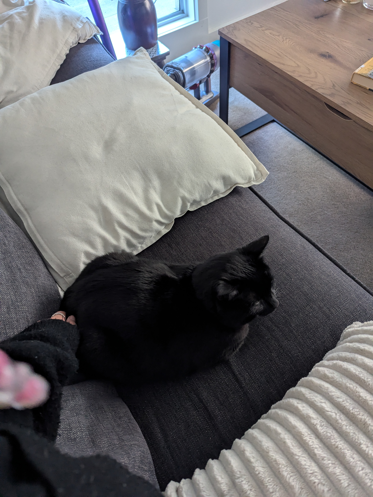
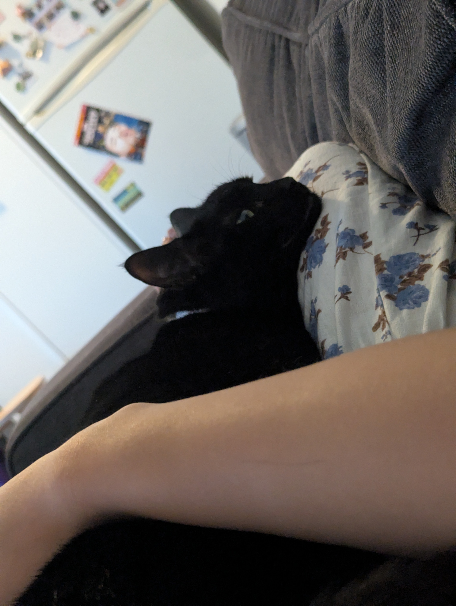
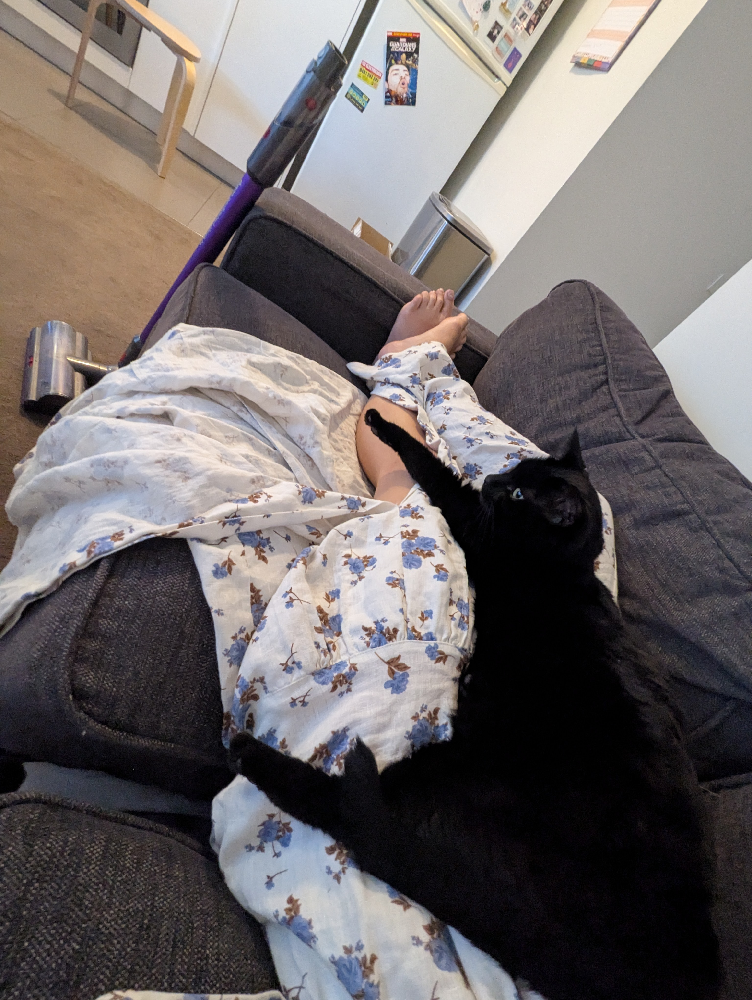
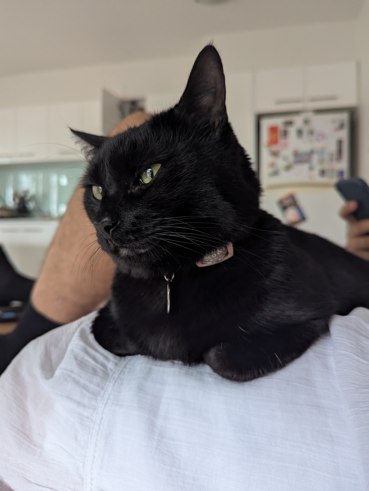
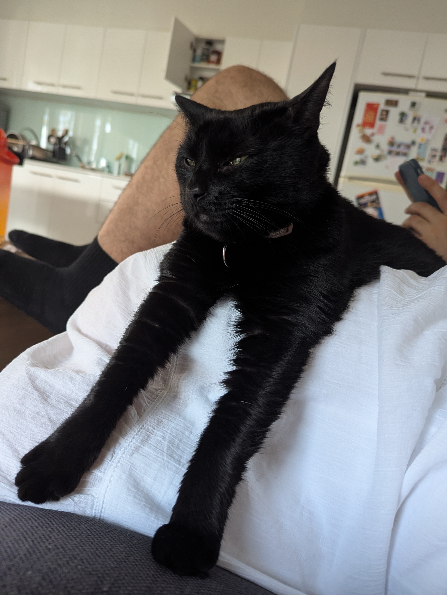
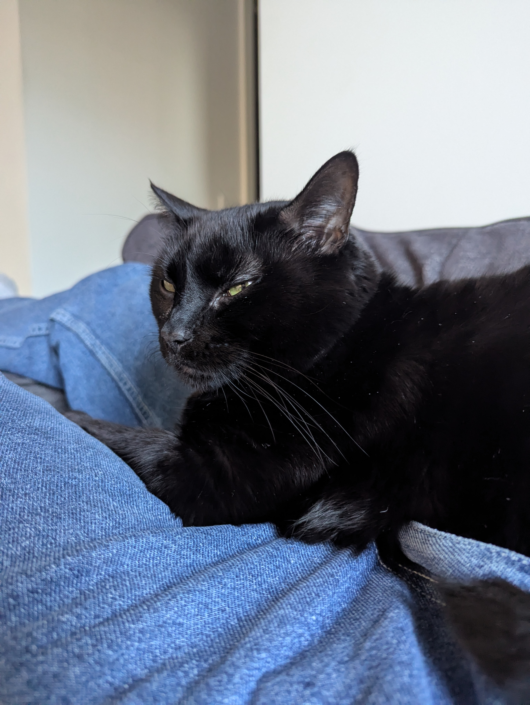

My little chonk Jiji. Her hobbies include knocking things over, staring into the void, and ruining my couch.
All images included in this section are my original photographs.
Jiji's Fun Facts
Here are a few fun facts about my furry friend:
- Jiji loves to knock things off the counter just for fun.
- She has an obsession with staring out the window at birds.
- Her favorite napping spot is on top of a pile of laundry.
Jiji's and Pickles
I just added this section for an article portion of my html

Cat Care Tips
Here are some of the best cat care tips I’ve learned while taking care of Jiji:
- Always keep fresh water available—cats love to drink, but sometimes they need a little encouragement!
- Regular playtime is essential for keeping them active and healthy.
- Make sure they have a quiet, safe space to retreat to when they want some alone time.





